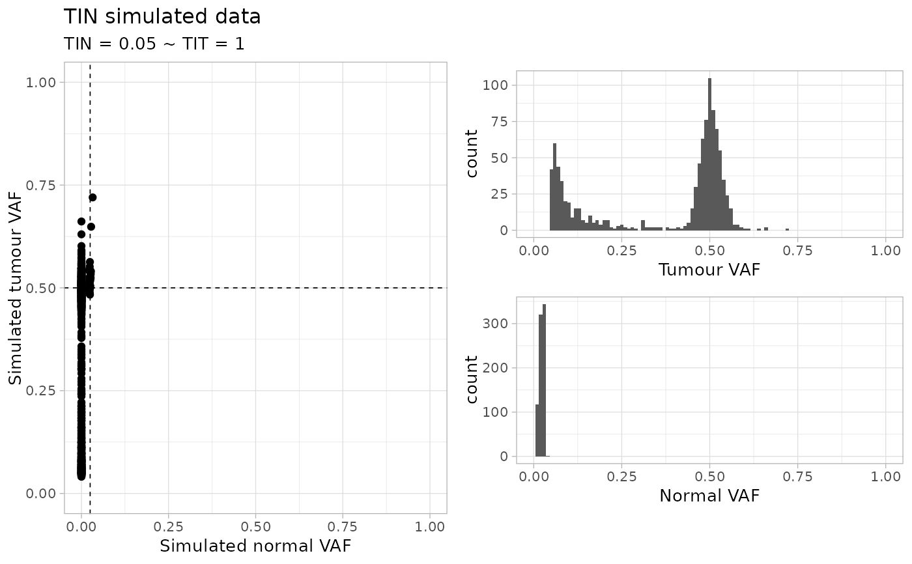

This function simulates a random dataset for TINC analysis,
with mutations and copy number data. Segments are not real, they are assumed
to be constant heterozygous diploid (Major = minor = 1) and span just
mutations (for mappability).
This samples has some noise so that the obtained TIT score might be slightly lower than the required input.
random_TIN(
N = 1000,
TIN = 0.05,
TIT = 1,
normal_coverage = 30,
tumour_coverage = 120
)Number of input simulations
TIN - Tumour in normal contamination level.
TIT - Tumour in tumour contamination level (aka tumour purity).
Normal coverage (mean).
Tumour coverage (mean).
Tibbles with the data, and a plot.
set.seed(1234)
# Default dataset
random_TIN()
#> ✔ Generated TINC dataset (n = 993 mutations), TIN (0.05) and TIT (1), normal and tumour coverage 30x and 120x.
#> Warning: Removed 2 rows containing missing values (`geom_bar()`).
#> Warning: Removed 2 rows containing missing values (`geom_bar()`).
#> $data
#> # A tibble: 993 × 14
#> chr from to ref alt simulated_cluster n_tot_count t_tot_count
#> <chr> <int> <dbl> <chr> <chr> <chr> <int> <int>
#> 1 chr7 35313892 35313893 T T C1 26 97
#> 2 chr4 91849681 91849682 T G C1 35 112
#> 3 chr2 64361736 64361737 T G C1 34 127
#> 4 chr13 32918119 32918120 T A C1 29 90
#> 5 chr16 58555938 58555939 A A C1 28 120
#> 6 chr14 86283665 86283666 T C C1 21 121
#> 7 chr18 29976579 29976580 G C C1 27 119
#> 8 chr21 33111774 33111775 G T C1 29 139
#> 9 chr15 9817911 9817912 G T C1 26 125
#> 10 chr16 35593568 35593569 T C C1 34 115
#> # ℹ 983 more rows
#> # ℹ 6 more variables: n_alt_count <dbl>, t_alt_count <dbl>, n_ref_count <dbl>,
#> # t_ref_count <dbl>, sim_t_vaf <dbl>, sim_n_vaf <dbl>
#>
#> $cna
#> # A tibble: 993 × 6
#> chr from to ref Major minor
#> <chr> <dbl> <dbl> <chr> <dbl> <dbl>
#> 1 chr7 35313891 35313894 T 1 1
#> 2 chr4 91849680 91849683 T 1 1
#> 3 chr2 64361735 64361738 T 1 1
#> 4 chr13 32918118 32918121 T 1 1
#> 5 chr16 58555937 58555940 A 1 1
#> 6 chr14 86283664 86283667 T 1 1
#> 7 chr18 29976578 29976581 G 1 1
#> 8 chr21 33111773 33111776 G 1 1
#> 9 chr15 9817910 9817913 G 1 1
#> 10 chr16 35593567 35593570 T 1 1
#> # ℹ 983 more rows
#>
#> $plot

#>